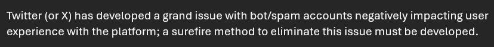

Problem Statement
Algorithmic Design - Coffee Code

This Java program allows the user to create two different coffees and compare/contrast the caffeine content of both.
Algorithmic Design - Fleet of Vehicles

This Java program allows the user to create a fleet of vehicles of their choosing.
Affinity Diagram

This diagram maps out the general scope and potential hurdles of the program.
Twitter (or X) has developed a grand issue with bot/spam accounts negatively impacting user experience with the platform; a surefire method to eliminate this issue must be developed.
Affinity Diagram
Brief description about the sketches
Prototype
AntiBot is a browser extension that allows the user to automatically block any botted account that follows them on Twitter.